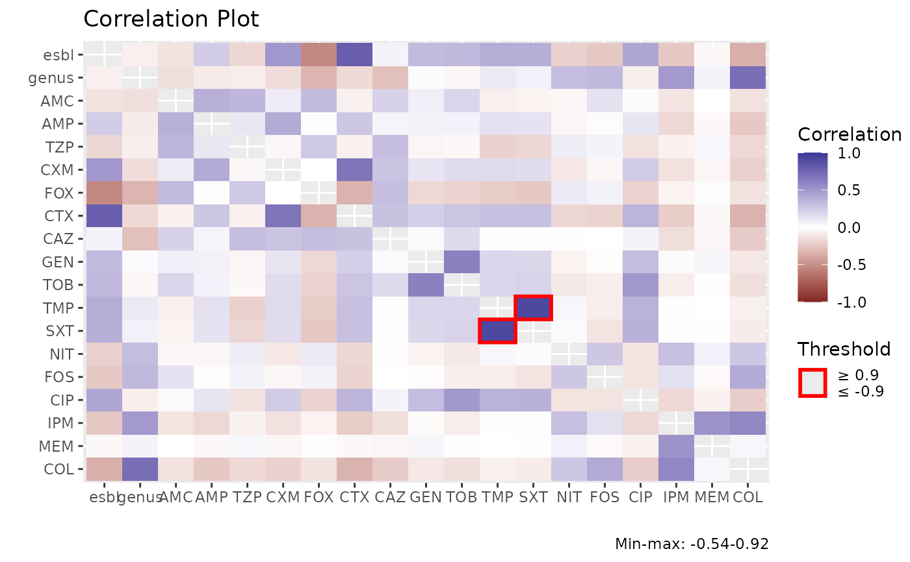

Create a machine learning model based on different 'engines'. These function internally use the tidymodels packages by RStudio, which is the tidyverse variant for predictive modelling.
ml_decision_trees(
.data,
outcome,
predictors,
training_fraction = 3/4,
strata = NULL,
max_na_fraction = 0.01,
correlation_filter = TRUE,
centre = TRUE,
scale = TRUE,
engine = "rpart",
mode = c("classification", "regression", "unknown"),
tree_depth = 10,
...
)
ml_linear_regression(
.data,
outcome,
predictors,
training_fraction = 3/4,
strata = NULL,
max_na_fraction = 0.01,
correlation_filter = TRUE,
centre = TRUE,
scale = TRUE,
engine = "lm",
mode = "regression",
...
)
ml_logistic_regression(
.data,
outcome,
predictors,
training_fraction = 3/4,
strata = NULL,
max_na_fraction = 0.01,
correlation_filter = TRUE,
centre = TRUE,
scale = TRUE,
engine = "glm",
mode = "classification",
penalty = 0.1,
...
)
ml_neural_network(
.data,
outcome,
predictors,
training_fraction = 3/4,
strata = NULL,
max_na_fraction = 0.01,
correlation_filter = TRUE,
centre = TRUE,
scale = TRUE,
engine = "nnet",
mode = c("classification", "regression", "unknown"),
penalty = 0,
epochs = 100,
...
)
ml_nearest_neighbour(
.data,
outcome,
predictors,
training_fraction = 3/4,
strata = NULL,
max_na_fraction = 0.01,
correlation_filter = TRUE,
centre = TRUE,
scale = TRUE,
engine = "kknn",
mode = c("classification", "regression", "unknown"),
neighbors = 5,
weight_func = "triangular",
...
)
ml_random_forest(
.data,
outcome,
predictors,
training_fraction = 3/4,
strata = NULL,
max_na_fraction = 0.01,
correlation_filter = TRUE,
centre = TRUE,
scale = TRUE,
engine = "ranger",
mode = c("classification", "regression", "unknown"),
trees = 2000,
...
)
bootstrap_ml(
.data,
outcome,
predictors,
times = 25,
training_fraction = 3/4,
strata = NULL,
max_na_fraction = 0.01,
correlation_filter = TRUE,
centre = TRUE,
scale = TRUE,
mode = c("classification", "regression")
)
apply_model_to(object, new_data, only_prediction = FALSE)
# S3 method for certestats_ml
confusionMatrix(data, ...)
# S3 method for certestats_ml
metrics(data, ...)
# S3 method for certestats_ml
autoplot(object, ...)
# S3 method for certestats_ml_bootstrap
autoplot(object, all_cols = FALSE, ...)Data set to train
Outcome variable to be used (the variable that must be predicted). In case of classification prediction, this variable will be coerced to a factor.
Variables to use as predictors - these will be transformed using as.double()
Fraction of rows to be used for training, defaults to 75%. The rest will be used for testing. If given a number over 1, the number will be considered to be the required number of rows for training.
Groups to consider in the model (i.e., variables to stratify by)
Maximum fraction of NA values (defaults to 0.01) of the predictors before they are removed from the model
A logical to indicate whether the predictors should be removed that have to much correlation with each other, using recipes::step_corr()
A logical to indicate whether the predictors should be transformed so that their mean will be 0, using recipes::step_center()
A logical to indicate whether the predictors should be transformed so that their standard deviation will be 1, using recipes::step_scale()
R package or function name to be used for the model, will be passed on to parsnip::set_engine()
Type of predicted value - defaults to "classification", but can also be "unknown" or "regression"
An integer for maximum depth of the tree.
Arguments to be passed on to the parsnip functions, see Model Functions
A non-negative number representing the total amount of regularization (specific engines only).
An integer for the number of training iterations.
A single integer for the number of neighbors
to consider (often called k). For kknn, a value of 5
is used if neighbors is not specified.
A single character for the type of kernel function used
to weight distances between samples. Valid choices are: "rectangular",
"triangular", "epanechnikov", "biweight", "triweight",
"cos", "inv", "gaussian", "rank", or "optimal".
An integer for the number of trees contained in the ensemble.
Number of times to run the model(s), defaults to 25
outcome of machine learning model
new input data that requires prediction, having the same columns of the training data
only return predictions, without chances
Include all columns, not only sensitivity, specificity, pos_pred_value, neg_pred_value.
To predict regression (numeric values), the function ml_logistic_regression() cannot be used.
To predict classifications (character values), the function ml_linear_regression() cannot be used.
The workflow of the ml_*() functions is basically like this (thus saving a lot of tidymodels functions to type):
.data
|
rsample::initial_split()
/ \
rsample::training() rsample::testing()
| |
recipe::recipe() |
| |
recipe::step_corr() |
| |
recipe::step_center() |
| |
recipe::step_scale() |
| |
recipe::prep() |
/ \ |
recipes::bake() recipes::bake()
| |
generics::fit() yardstick::metrics()
| |
output attributes(output)
These are the called functions from the parsnip package. Arguments set in ... will be passed on to these parsnip functions:
ml_decision_trees: parsnip::decision_tree()
ml_linear_regression: parsnip::linear_reg()
ml_logistic_regression: parsnip::logistic_reg()
ml_neural_network: parsnip::mlp()
ml_nearest_neighbour: parsnip::nearest_neighbor()
ml_random_forest: parsnip::rand_forest()
model1 <- iris %>% ml_random_forest(Species, where(is.double))
model2 <- iris %>% ml_decision_trees(Species, where(is.double))
model3 <- iris %>% ml_neural_network(Species, where(is.double))
model1 %>% metrics()
#> # A tibble: 2 × 3
#> .metric .estimator .estimate
#> <chr> <chr> <dbl>
#> 1 accuracy multiclass 0.947
#> 2 kap multiclass 0.917
model2 %>% metrics()
#> # A tibble: 2 × 3
#> .metric .estimator .estimate
#> <chr> <chr> <dbl>
#> 1 accuracy multiclass 0.895
#> 2 kap multiclass 0.842
model1 %>% apply_model_to(iris)
#> # A tibble: 150 × 4
#> predicted .pred_setosa .pred_versicolor .pred_virginica
#> <fct> <dbl> <dbl> <dbl>
#> 1 setosa 0.995 0.00376 0.00118
#> 2 setosa 0.977 0.0215 0.00164
#> 3 setosa 0.981 0.0145 0.00467
#> 4 setosa 0.988 0.00852 0.00359
#> 5 setosa 0.992 0.00215 0.00604
#> 6 setosa 0.976 0.0211 0.00333
#> 7 setosa 0.984 0.00692 0.00922
#> 8 setosa 0.980 0.0103 0.00959
#> 9 setosa 0.921 0.0729 0.00578
#> 10 setosa 0.986 0.0108 0.00359
#> # … with 140 more rows
model1 %>% autoplot()

model1 %>% confusionMatrix()
#> Confusion Matrix and Statistics
#>
#> outcome
#> .pred_class setosa versicolor virginica
#> setosa 12 0 0
#> versicolor 0 17 1
#> virginica 0 1 7
#>
#> Overall Statistics
#>
#> Accuracy : 0.9474
#> 95% CI : (0.8225, 0.9936)
#> No Information Rate : 0.4737
#> P-Value [Acc > NIR] : 4.248e-10
#>
#> Kappa : 0.9167
#>
#> Mcnemar's Test P-Value : NA
#>
#> Statistics by Class:
#>
#> Class: setosa Class: versicolor Class: virginica
#> Sensitivity 1.0000 0.9444 0.8750
#> Specificity 1.0000 0.9500 0.9667
#> Pos Pred Value 1.0000 0.9444 0.8750
#> Neg Pred Value 1.0000 0.9500 0.9667
#> Prevalence 0.3158 0.4737 0.2105
#> Detection Rate 0.3158 0.4474 0.1842
#> Detection Prevalence 0.3158 0.4737 0.2105
#> Balanced Accuracy 1.0000 0.9472 0.9208
if (FALSE) {
esbl %>%
ml_random_forest(esbl_interpr,
betalactams()) %>%
apply_model_to(esbl[1:10, ])
}